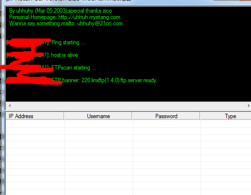

一次黑客站打脸到虚拟主机上百网站全控制
昨天的下午接近2点钟 一徒弟（不在意细节）发来个站
正好无聊 看看呗
打开一看 牛逼的黑客站。。吓死了 吓得我赶紧关了 我回了他一句 这他妈你也想黑？
然后边和徒弟扯淡的额功夫 上whois收集下信息
旁站差不多有10多个 （应该是工具报错 最后发现有上百个）
随便点开一个 www.xxx.top
哇这网站还教怎么清除网马呀。。。就你了吧…
我是不想省略任何一部分 每个故事缺一部分就不完美了不是吗
思路旁站到主站 这站开始
本想注入 后台登录抓包 但无果 扫目录
这不好吧。。你还说教怎么清除网马。。。这不明摆日吗
下载www.zip 源码拿到 接着有了后台地址 下载数据库得到密码
Md5也被解了出来 看起来没压力呀
进后台 一个典型精良南方 虽然没备份数据库
我去 拿那个黑客主站感觉胜利在望啊 是吗？
拿shell 第一个想到在upfile_other 上传漏洞
但是被拦截 我也不知道为什么（事后发现有守护神 当然这是后话）
第二个想到配置文件插马 直接通过inc/config.asp得到一句话
但是傻了 看了源码 根本不存在config.asp 有一个config.html
管理在抠脚？
然后想着 这南方编辑器 试试 后台没找到 咋办 想到那份源码 我都目录了 那就很简单了
直接找到编辑器添加样式添加 aaspsp样式 getshell 这里不截图 没找到。。
一句话和大马都传了份

接下来就提权啊 提到了就可以装逼撒
c盘大部分有游览但没有写入权限 然后d盘home目录下ftp目录下有20多个文件夹 都是以一个字母或者数字来命名 没有权限游览 只有权限看文件名
我拿的这个是在d:\home\ftp\l\wwwroot\下
发现回收站目录是有权限写入和读取的 上传cmd.exe 执行 提示和系统的不匹配
我是上传我自己电脑的 64 难道服务器是32的？ 网上下载了个32位的 果然ok
哎呀我去 我黑页已准备啊 随时待发装逼哈哈
添加没回显 没问题啊 怕你啊 上大杀器
看看补丁 呵呵 神器杀你 但是自己也没想到 提了3个小时 无果
pr.exe win32.exe 051.exe ms15-007.exe elevator.exe 巴西烤肉 iis6 全部上过 都是执行命令无果
这没想到自己卡这了 马上找大牛提权啊
我认识的几个乌云大叼 都没果。。。我在菜刀翻到了守护神的安装目录
诶 没exp过它 只有卡这了 一看钟 8点多 吃饭和看看视频把
再次开电脑前 晚上12点
灯火通明 抽根烟 想想
理理思路
看到了home ftp 可以断定他大概是买的个主机上传 这是个虚拟主机的服务器 肯定权限设置的很死 不好提权 然后呢他就是开了个ftp 我想了下 还是从ftp入手吧
我想到的是 直接爆破它ftp看看能有啥成果
1小时 3万大字典 无果 快哭了

确实没想出来 怎么弄 打几把游戏 睡觉
第二天早上
起来又还了人家300元 诶缺钱了 心情不行 那就做一次小学生吧
去那个shell挂个txt 骂骂那个教怎么清除网马却自己站被渗透的网站管理吧
连接的再看到这个 突然有疑问 为什么会有这些疑似敏感信息的文件？
这时候我估计可能是以每个用户的帐号名来命名的
准备挂txt
不对？ 这是在ftp的目录下
打开ftp连接软件 帐号输入了那个我拿了的网站的文件名 lian***888 密码 我随便写了个admin
失败 再次将帐号密码都输入lian***888

爆炸 峰回路转
哈哈哈哈哈哈哈 此处笑的咪咪痛
那么这个主机ftp的规则就是以这些文件名为帐号 密码
然后我去了那个黑阔的官网
收集了如下信息
QQ:334345**** 手机:1355*****
黑阔名:***
按这些信息我去找他用户名结果没找到 又去了西部数码问客服然而客服不给（666）
然后就联系徒弟了 一边和徒弟语音唠嗑 一边俩人同时试帐号密码
然而当我拿到帐号密码 心里忍不住的激动
算是给这两天的一个回报吧 有机会打黑阔脸了好开森
黑页装逼就不发了。。。。。别在意这些细节 弄着娱乐的
那么虽然是渗透一个小站 但是拿到了上百的网站ftp权限
很开森的 也期待我的故事能够从这里继续下去 深入下去
可能写的不好技术烂但是听我这么生动的装逼你怕了吗？
每一次入侵都是一个故事 未完待续。。。。